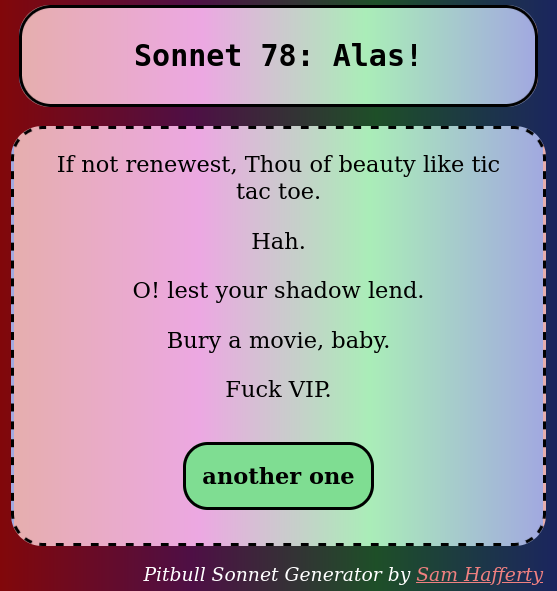

Papernet
A small network between users around the world and a single thermal printer in NYC. Users send text messages directly to the printer via a self-hosted https webpage on a Raspberry Pi 3 Model B. Printed messages are then immediatley shredded by a mechanical paper shredder a few inches below. Learn more on my blog post linked here.
Serenity Local
A modified newspaper box which provides a sonic break from chaotic informationscapes of the city. Site specific ambient interpretations of localized field recordings and characteristic lighting provide a brief headspace for visitors to take it easy and reduce their neural processing power load. Serenity Local is about rest and relaxation. About taking mental breaks and engaging with environments with slowness and calmness. Learn more on my blog post linked here.

PITBULL'S SONNETS
A text generator built on Python using Markovify, Shakespeare's sonnets, and an archive of Pitbull lyrics. Pushed to web with Flask and Heroku.
Bot Sermon
A python text generation bot with source texts in the realms of computer science and theology that used the Twitter API to tweet a line of gospel every day.